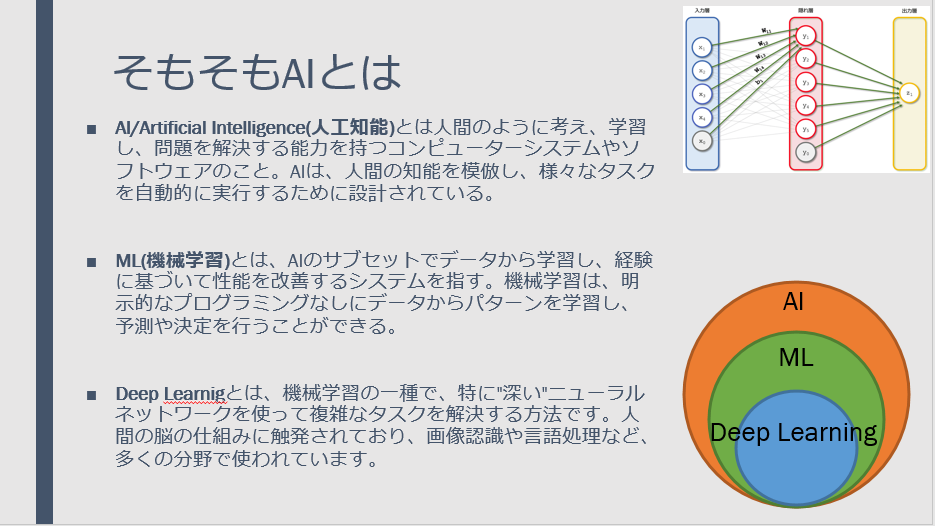
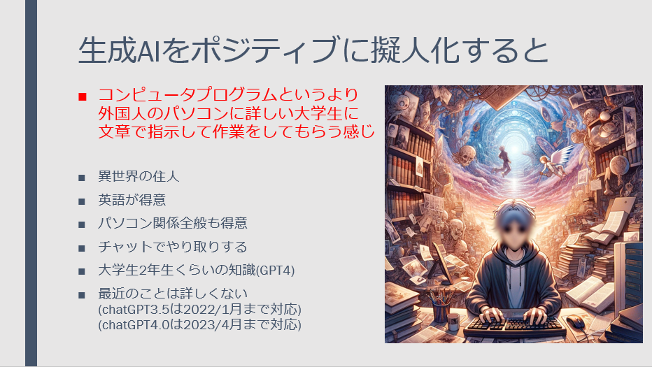
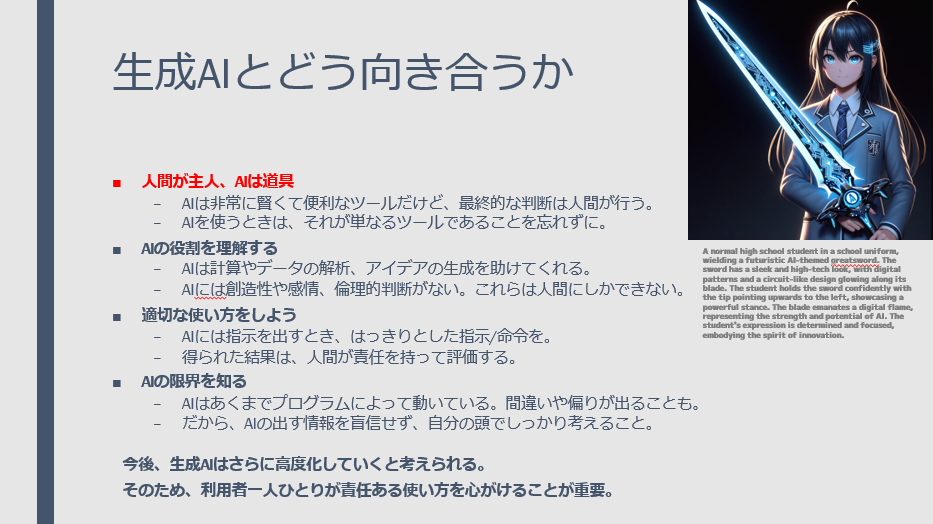
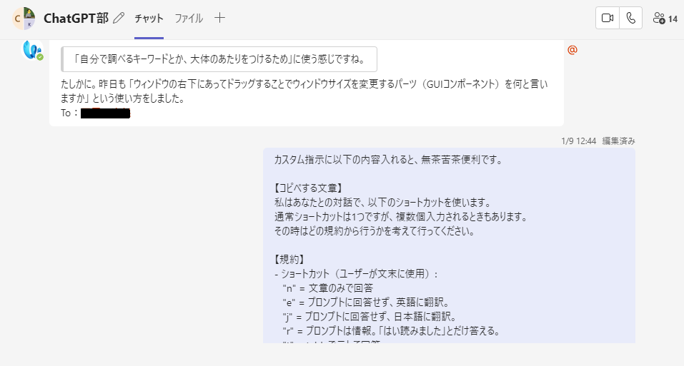
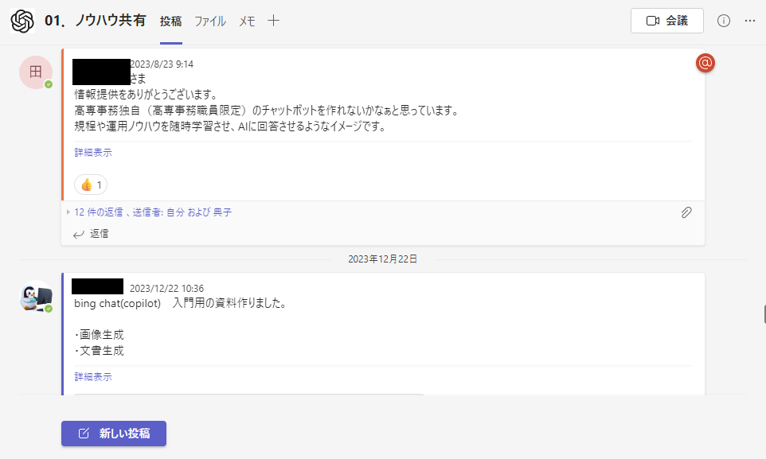

扱える生成AI技術LLM(chatGPT,claude2,copilot) t2i(stable diffusion,DALLE3)
近年話題となっている生成AIについても業務内外で積極的に情報を収集し、日々の業務に生かしている
2023/12/8にコース担当教員から依頼の元、生成AI概論の講義を1コマ(3時間)分行った。添付の画像はその時に使用したパワーポイントの抜粋である。
総ページ数 約120P程度 述べ製作時間10時間程度 該当科目:4年メカトロニクスコース実験実習(1コマ)
使用したサービス「Copilot/image creator(旧bingchat及びbing image creator)」
  収集した情報に関しては、学内の生成AI利用教員のTeamsコミュニティにおいて積極的に発信し、知識の共有をはかっている
 GPTsとはchatGPT有料会員向け機能で、特定作業用のBOTのことを表す。特定業務を簡単に行えるようになるので、その作成にも積極的に取り組み、上記のコミュニティに定期的に放出している。
・機械設計品評マスター
・2I 実験実習支援GPTs
・ゆるふわ画像生成BOT